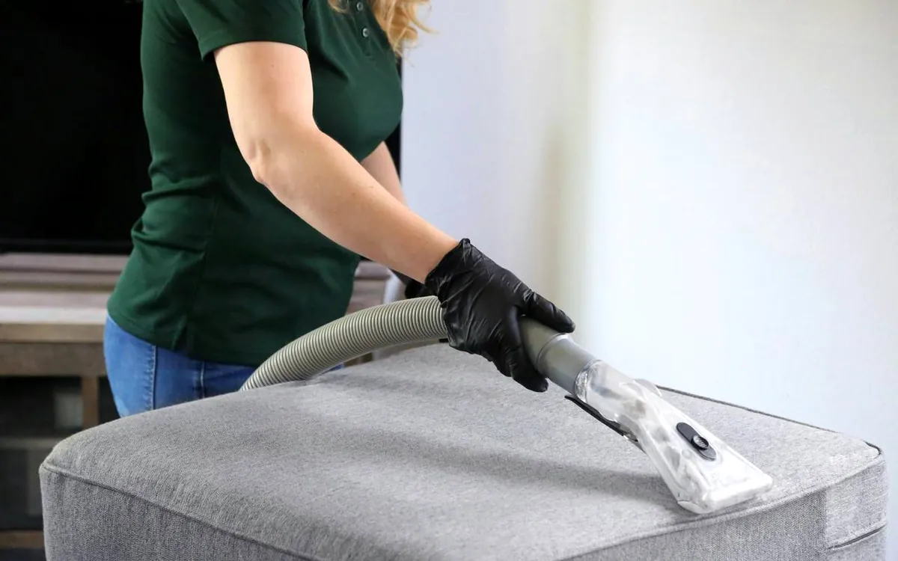
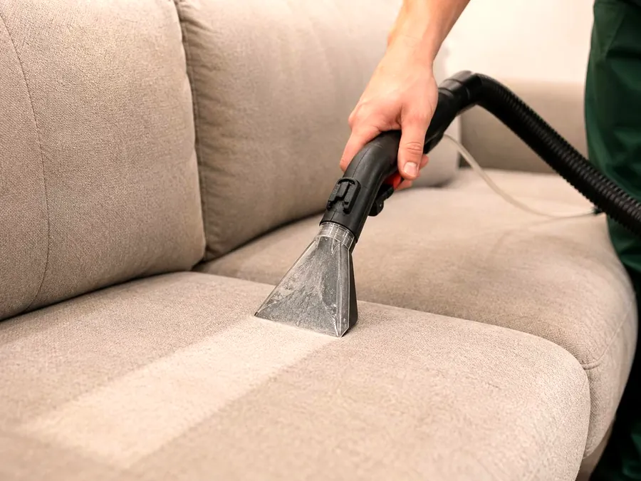
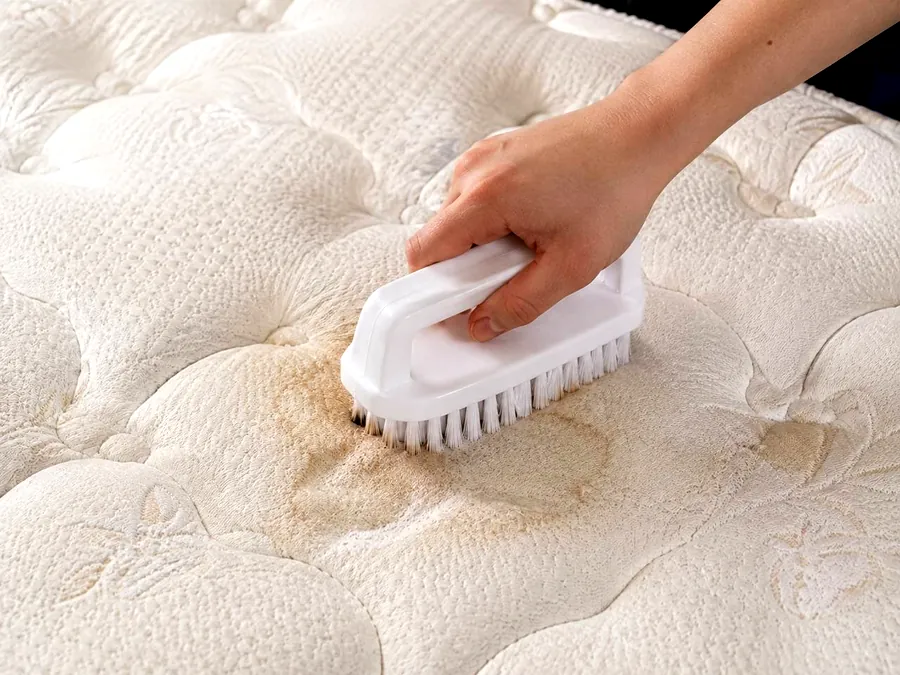
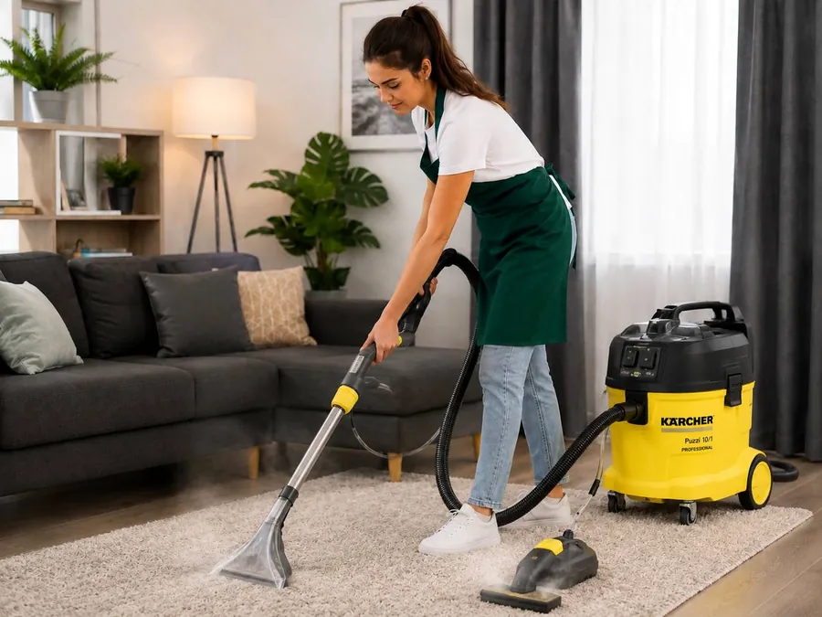

01 / МЯГКАЯ МЕБЕЛЬ
Диваны и кресла
Прямые и угловые диваны, кресла, мягкие стулья и пуфы.
Рассчитать диванТорревьеха · Коста-Бланка
Профессиональная химчистка мягкой мебели на дому в Торревьехе и на Коста-Бланке.
Рассчитать стоимость по фото
Чистота начинается с заботы
Пятна на диване, потемневшие подлокотники, несвежий матрас? EcoCleaning поможет удалить накопившуюся грязь, обработать пятна и освежить обивку — чтобы на вашей мебели снова было приятно отдыхать.
Приезжаем к вам с профессиональным оборудованием и необходимыми средствами. Вам не нужно перевозить мебель и тратить своё время — всю работу выполняем на дому, а вы проводите время с семьёй.
Что мы чистим
От любимого кресла до большого дивана — подберём уход с учётом материала и состояния изделия.

Прямые и угловые диваны, кресла, мягкие стулья и пуфы.
Рассчитать диван
Обработка загрязнений и пятен, тщательная чистка спальной поверхности.
Рассчитать матрас
Подбираем способ обработки с учётом материала и характера загрязнения.
Рассчитать ковёрОтправьте фото салона: обсудим объём работ и подготовим расчёт.
Наш подход
Каждая ткань требует своего подхода. Перед началом осматриваем изделие, оцениваем загрязнения и подбираем подходящие средства и способ обработки.
Сначала тщательно проходим изделие пылесосом, подготавливая обивку к влажной чистке.
Отдельно обрабатываем пятна, наносим чистящее средство и бережно прорабатываем обивку подходящей щёткой.
Извлекаем растворённую грязь и излишки влаги. Уделяем внимание подлокотникам, швам и стыкам.
По вашему запросу включаем в чистку съёмные подушки, подголовники, заднюю часть спинки и раскладное спальное место. Все дополнительные элементы согласуем заранее.
Результат — более чистая обивка, ухоженный вид и свежесть любимой мебели.
Пятна и запахи
Следы кофе, еды, напитков, пота, ручки или маркера обрабатываем с учётом ткани и характера загрязнения.
Если беспокоит запах, оцениваем его источник: загрязнения, проникшие в наполнитель, могут потребовать дополнительной обработки.
Понятная стоимость
Цена зависит от размера изделия, состояния обивки и объёма работы. Заранее уточняем все дополнительные элементы и согласуем стоимость — вы понимаете, что входит в ваш заказ.
Хотите почистить диван, матрас и несколько стульев за один приезд? Отправьте фотографии всех предметов, и мы рассчитаем весь заказ.
Время зависит от комплектации и загрязнений. Продолжительность вашего заказа уточним при оценке.
Выберите предметы для расчёта. Можно несколько. Мы добавим их в сообщение WhatsApp.
Можно выбрать несколько предметов.
Перед нашим приездом
EcoCleaning · у вас дома
Отправьте фото в WhatsApp и расскажите, что хотите почистить.
Мы уточним детали, рассчитаем стоимость и согласуем удобное время приезда.